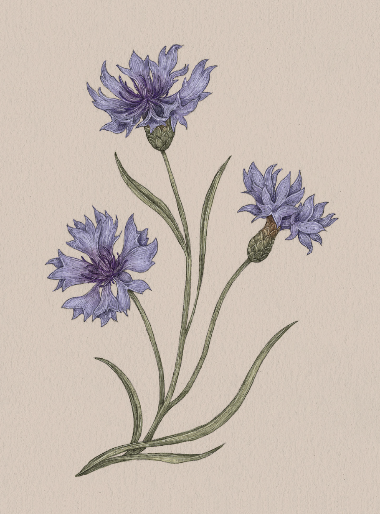

Plate CORNFLOWER
The Language of Flowers
Cornflower Study

Cornflower
Centaurea cyanus
Definition: A flower associated in floriography with hope in love and the possibility of love returned.
Meaning
Hope in love
Origin
Folklore surrounding the cornflower, also called a "bachelor's button," states that a young man is to
wear the flower when he is in love. If the flower dies quickly, it means his adoration is unrequited.
However, if the flower maintains its bloom, there is hope that the young man's love will be returned.
Pair With
- Lilac as a gift for a first love
- Sweet William to show you will always be true